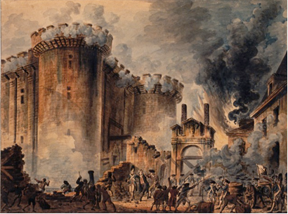

Liberalism, as we know it today, has come about much the same way. From the 1700s on, a wave of new thinking was sweeping parts of Europe. As the liberal thinkers of the day published their ideas in books and pamphlets, their ideas began to influence the organization of society, government, and the economy. Through the centuries, those ideas were modified and built upon to give us our present understanding of liberalism. But to understand how we got here, we need to examine the “classical liberalism” from which our modern concept of liberalism evolved.
In this lesson, you will explore the question: What forces and beliefs stimulated the development of classical liberalism?

In previous Social Studies courses, you likely learned about the French Revolution. The French Revolution was a nationalist movement. The French rejected the long-held concept of themselves as “subjects of a king” and replaced it with the idea of being “citizens of a nation”.
The French Revolution, however, was also a ‘liberal’ movement. It represented a rejection of absolute rule by one individual in favour of rule by a government of the people. It replaced a social and governmental system based on heredity and privilege with one based on equality and rights.
The seeds of the French Revolution, and many later revolutions, were planted during a period called the “Enlightenment” or the “Age of Reason”. Writers and thinkers, or, as they were referred to in France, “philosophes”, began to challenge the traditional political, social, and economic structures that were in place at the time.
Absolute monarchy in France and many other countries was based upon the concept of the divine right of kings. The divine right of kings is the theory that absolute monarchs held power because God had chosen them to rule
The divine right of kings was supported and promoted by the Catholic Church which was a powerful influence in the lives of the common people. Based on the Church’s teachings then, criticizing the monarch or his or her right to rule could be construed as questioning the judgment of god.
During the Enlightenment, however, many of the philosophes did question traditional ideas, including the existence of god, god’s role in human affairs if he did exist, and the right of the king to rule over his subjects with absolute power. By challenging centuries-old ideas about government and the monarchs’ right to rule, the writers of the Enlightenment laid the groundwork for the overthrow of many of Europe’s monarchies and their eventual replacement by liberal democracies.
Democracies founded on these early ideals of liberalism were still substantially different from most modern concepts of democracy. The notion of what should be considered a “right” and exactly who should be entitled to those rights would continue to develop over the centuries.
As well as tackling the rights of kings to rule absolutely, many liberal thinkers began to criticize the dominant economic system of the time, mercantilism.
This system was in effect from approximately the fifteenth century to the eighteenth century. During this time, many of Europe’s monarchs’ sole aim was to make their nation as wealthy as possible, even if it meant exploiting other smaller nations. Under mercantilism, monarchs would grant certain merchants, friends, relatives, or companies a license to operate their business enterprises and trade abroad. Granting privileges to certain businesses created monopolies. This limited the availability of goods and drove prices up. The competition was almost non-existent. Monarchs filled their treasuries by selling licenses and taxing the merchants and companies that were making large profits through this system.
Mercantilism was criticized by the physiocrats, French economists whose ideas began to influence the latter half of the 18th century. Under mercantilism, monarchs accumulated wealth in the form of gold bullion by restricting the flow of money out of the country and taxing goods imported. The physiocrats advocated a policy of laissez-faire (leave alone) economics.
In his 1776 work, The Wealth of Nations, Scottish economist Adam Smith built on the ideas of the physiocrats, arguing that the freedom to own property and to produce, sell, and buy goods without government intervention would ultimately serve to generate national wealth far more effectively than mercantilism.
Smith believed that people instinctively seek what is best for themselves. He thought that this self-interest should be freely expressed in an environment of unlimited competition that is a free market system.
Smith held that the natural interplay between buyers, sellers, workers, and employers would ultimately ensure that goods were produced efficiently and economically. Government meddling in the economy would be unnecessary. Competition between consumers for products, between businesses for consumers’ dollars, between workers for jobs, and between employers for skilled workers, would ultimately make the economy self-regulating. Smith referred to this as the “invisible hand”.
As individuals strove to better their economic situation, the economy of the nation as a whole would also benefit.
“[The business person] is led by an invisible hand to promote an end which was no part of his intention. Nor is it always the worse for the society that it was no part of it. By pursuing his own interest he frequently promotes that of society more effectually than when he really intends to promote it. I have never known much good done by those who affect to trade for the public good. It is an affectation, indeed, not very common among merchants, and very few words need be employed in dissuading them from it.” —Adam Smith, The Wealth of Nations (1776)
Classical liberals had a far more expansive understanding of the term “minimal government interference” that exists at present. As capitalist ideals gained sway, there was little government regulation or oversight of business or business practices. The free market was far more “free” than it is today.
J.S. Mill was an English political writer who lived during the Industrial Revolution. He wrote a book called "On Liberty" where he argued that individual rights were to be protected over the rights of the government. Mill declared that freedom of speech was the most important right and everyone should have the right to say what they wanted even if it was very controversial.
Mill famously wrote about the "Harm Principle". He said that everyone should have the right to live however they wanted as long as it didn't harm someone else's right to live as they wanted.
"The only freedom which deserves the name is that of pursuing our own good in our own way, so long as we do not attempt to deprive others of theirs, or impede their efforts to obtain it ... Mankind are greater gainers by suffering each other to live as seems good to themselves, than by compelling each to live as seems good to the rest." - John Stuart Mill, On Liberty, 1859
Capitalism: an economic system based on free markets, private ownership of the means of production, competition, wise consumers, and profit-motivated producers
Divine right of kings: the belief that kings derived their authority from God and could not, therefore, be held accountable for their actions by any earthly authority
Free market system: an economic system in which individuals are free to own property, produce goods, and buy or sell goods and services with little or no government interference; sometimes also referred to as capitalism, the market system, free enterprise, private enterprise
Harm principle: if what you are doing does not hurt anyone else, then you should be free to do it without government interference.
invisible hand: in economics, the concept that individual self-interest and competition would regulate the economy.
Laissez-faire: an economic theory or system that advocates little or no government interference in the economic affairs of the people.
Mercantilism: an economic system that was characterized by efforts to restrict trade between nations, regulate economic activity, and accumulate gold bullion in the national treasury.
Natural rights: universal and inalienable rights held by all human beings (eg. in John Locke's philosophy).
Self-interest: one's interest or advantage
Self-regulating: the process of monitoring your thoughts, feelings, and behaviours
Social contract: people live together in society by an agreement that establishes moral and political rules of behaviour
Tyranny of the majority: when the majority of the people pursues exclusively its objectives at the expense of those of the minority
In this lesson, you saw that classical liberalism was not able to provide the average person with a reasonable standard of living. Industrialization led to poor working conditions, child labour, poverty, and illness for many people. Eventually, there was a shift in thought, and it was recognized that the government had to deal with these social consequences. Classical liberalism began to evolve.
The abuses of capitalism led to increased government involvement and policies that supported the needs of the middle and lower classes. Modern liberalism has evolved out of classical liberalism to protect the common good as well as individual rights and freedoms.
Take a moment to consider the following questions:
You may want to access the following additional resources.